数据结构
数据结构
2.入门概述
2.1线性表的概念
所谓线性表,就是讲数据排列成一条长线的结构,如:顺序表,数组,链表,栈,队列
**非线性结构:**树,堆,图等
3.数组
数组是一种线性结构,他用一组连续的内存空间,来存储一组具有相同数据类型的数据
3.1 特性:随机访问
劣势:数组插入删除操作效率非常低
3.2 逻辑结构和物理结构
3.2.1 数组元素的访问
计算机给每个内存单元都分配了一个地址,通过地址来访问其数据,因此要访问数组中的某个元素时,,首先要经过一个寻址公式计算要访问的元素在内存中的地址.
1 | a[i] = baseAddress + i * dataTypesize |
3.2.2 数组下标为什么从0 开始
从数组的存储的内存模型上来看,”下标”最切确的定义应该是“偏移(offset)”,如果用array来表示数组的首地址,array[0]也就是偏移为0的位置,也就是首地址,array[k]就表示偏移k个type_size的位置,所以计算array[k]的内存地址只需要用这个公式
1 | array[k]_address = base_address+k*type_size |
如果从1开始,那么计算就会变为
1 | array[k]_address = base_address+k*type_size |
对于CPU来说,就多了一次减法指令
3.3 数组的特点
3.3.1 高效的随机访问
数组元素的访问是通过下标来访问的,计算机通过首地址和寻址公式能够很快的找到我们想要访问元素
3.3.1 低效插入和删除
由于数据是一段连续的内存空间,因此插入和删除操作会变得非常低效
插入
比如在a[i] (假设a[i]不是最后一个元素)的元素后面插入一个数据,这时只能将a[i]后面的元素都往后挪一位
优化方案:如果数组中存储的数据是没用规律的,数组只是被当作一个存储数据的集合,在这种情况下,如果要在第i个位置插入数据,为了避免大规模数据的搬移,可以直接在最后添加一个元素,然后把原来第i个位置的数据放到最后面,将插入的数据放到第i个位置
删除
如果要删除第i个元素,为了数组的连续性,也需要搬移数据(将要删除的元素的后面的元素往前移)
优化方案:在某些特定场景下,不一定非得追求数组在的数据的连续性,如果我们将多次删除操作集中在一起执行,效率就会相对提高
如:假设数组a[6]中有6个元素,a1,a2,a3,a4,a5,a6,现在我们依次要删除a1,a2这两个元素
为了避免a3,a4,a5,a6.这些数据搬移两次,我们可以先记录下已经删除的数据,每次删除操作并不是真正的搬移数据,只是记录数据被删除,当数组没有更多的空间存储数据时,在触发执行一次真正的删除操作(搬移数据),这样就大大减少了数据搬移
就有点类似JVM的标记清楚垃圾回收的核心思想,还有windows操作系统的回收站功能
3.4 数组的应用
针对数组类型,很多语言都提供了容器类,如java的ArrayList,C++STL中的vector
ArrayList最大优势就是可以将很多数组操作的细节封装起来,比如数组的插入,删除时需要搬移数据等,另外他还有一个优势,就是支持动态扩容,数组本身在定义的时候需要预先指定大小,因为需要分配连续的内存空间,如果我们申请了大小为10 的数组,当第11个数组需要存储时,我们就需要重新分配一块更大的空间,将原来的数据复制过去,然后将新的数据插入.而ArrayList已经帮我们现实好了,当空间不足时,会自动扩容
4.链表
概念
链表是一种物理存储单元上非连续、非顺序的存储结构，数据元素的逻辑顺序是通过链表中的指针链接次序实现的。链表由一系列结点（链表中每一个元素称为结点）组成，结点可以在运行时动态生成。每个结点包括两个部分：一个是存储数据元素的数据域，另一个是存储下一个结点地址的指针域。 相比于线性表顺序结构，操作复杂。由于不必须按顺序存储，链表在插入的时候可以达到O(1)的复杂度，比另一种线性表顺序表快得多，但是查找一个节点或者访问特定编号的节点则需要O(n)的时间，而线性表和顺序表相应的时间复杂度分别是O(logn)和O(1)。
链表的类型
1. 单链表
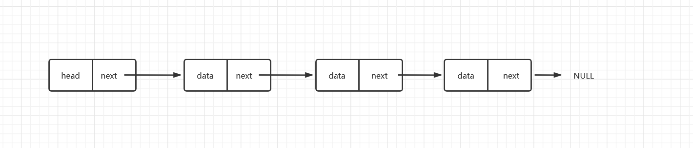
习惯上:把第一个结点叫做头结点,最后一个结点叫做尾结点
链表的增删操作(高效率)
链表在实现插入和删除操作时,并不需要搬移数据,只需将指针的指向更改就可以了
查找操作(低效率)
链表无法实现像数组一样随机查找,即使当我们想查找第k个元素时,只能从头结点开始遍历
2.循环链表
循环链表与单链表相比,循环链表在尾结点指向头结点
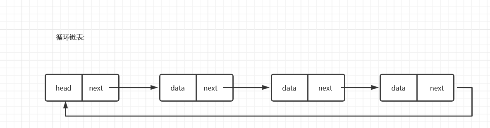
3.双向链表
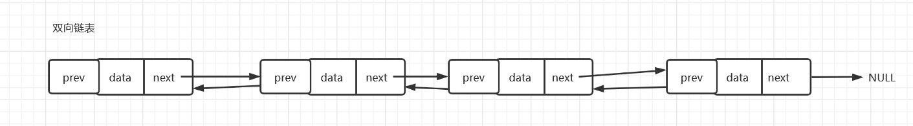
4.双向循环链表
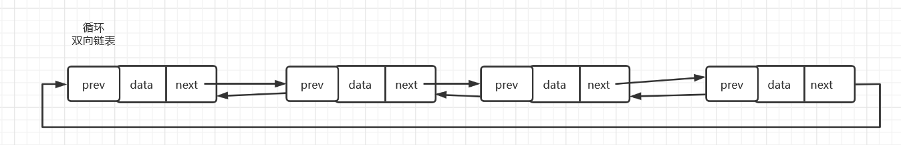
5.栈和队列
栈
概念:栈是一种先进后出的数据结构,限定仅在表尾进行插入删除操作的线性表,允许插入和删除的一端称为栈顶(top)
,另一端称为栈尾(bottom),简称LIEF结构
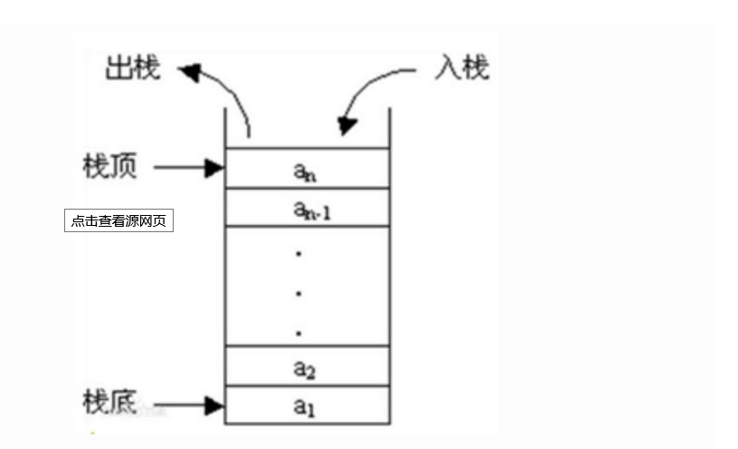
栈的操作:
- 入栈(Push):栈的插入数据的操作
- 出栈(Pop): 栈的删除数据操作
进栈出栈的变化形式
假设进栈顺序为123
- 第一种:1,2,3进, 3,2,1 出
- 第二种:1进1出,2进2出,3进3出 (也就是进一个出一个) 123
- 第三种:213 (2出栈,1出栈,3进栈再出栈)
- 第四种:132 (1进栈出栈,2进栈,3进栈,3出栈,2出栈)
- 第五种:231 (1进栈,2进栈,2出栈,3进栈,3出栈,1出栈)
不过不会出现312的情况,因为3出栈意味着,1和2都已经进栈了,而不可能1会比2先出栈
栈的作用以及应用
实际上递归就是运用到了栈的数据结构,**每次递归一次(自己调用自己),就相当于一次进栈操作,**最后达到终止条件,就开始出栈
栈的实现(待写)
递归
**概念:**程序调用自身的编程技巧称为递归（ recursion）。递归作为一种算法在程序设计语言中广泛应用。 一个过程或函数在其定义或说明中有直接或间接调用自身的一种方法，它通常把一个大型复杂的问题层层转化为一个与原问题相似的规模较小的问题来求解，递归策略只需少量的程序就可描述出解题过程所需要的多次重复计算，大大地减少了程序的代码量。递归的能力在于用有限的语句来定义对象的无限集合。一般来说，递归需要有边界条件、递归前进段和递归返回段。当边界条件不满足时，递归前进；当边界条件满足时，递归返回。
==即使自己调用自己==
应用:
如求1+2+3…+100 不使用循环而使用递归得Java代码如下所示
1 | package Test; |
递归问题:
(1)堆栈溢出
时间和空间消耗比较大。每一次函数调用都需要在内存栈中分配空间以保存参数，返回地址以及临时变量，而且往栈里面压入数据和弹出都需要时间。每个进程的栈容量是有限的。由于递归需要系统堆栈，所以空间消耗要比非递归代码要大很多。而且，如果递归深度太大，可能系统撑不住。
(2)重复计算
另外递归会有重复的计算。递归本质是把一个问题分解为多个问题，如果这多个问题存在重复计算，有时候会随着n成指数增长。斐波那契的递归就是一个例子。
1 | package Test; |
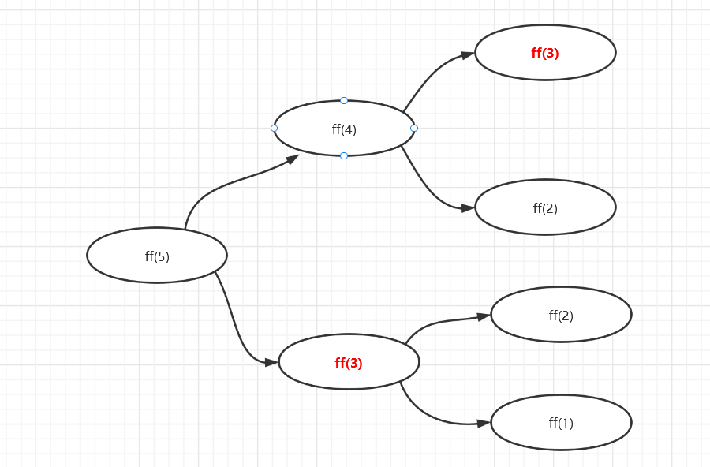
如上图所示,ff(3)就是重复计算了,故为了避免出现重复计算的问题,我们可以==通过一个数据结构(散列表)来保存已经求解过的ff(k),当递归调用到了ff(k)时,我们先检查一下是否求解过了,如果已经求解了直接重散列表中返回==
递归与循环
递归与循环非常相似,==循环都能转换成递归,但递归不一定能写成循环==,因为递归会有重复堆栈溢出,重复计算,空间复杂度和时间复杂度过大的风险,但某些情况下(如斐波那契数列,汉诺塔等),用递归更好.
如下例子:
1 | package Test; |
复杂度分析
时间复杂度:
在计算机科学中，时间复杂性，又称时间复杂度，算法的时间复杂度是一个函数，它定性描述该算法的运行时间。这是一个代表算法输入值的字符串的长度的函数。时间复杂度常用大O符号表述，==不包括这个函数的低阶项和首项系数。==使用这种方式时，时间复杂度可被称为是渐近的，亦即考察输入值大小趋近无穷时的情况(常见的时间复杂度有:O(1) O(n) O(n2) O(log n))
时间复杂度分析方法:
1.代码循环最多原则
大O表示法只表示一种变化趋势,公式中的低阶和常数系数并不左右增长趋势,因此可以忽略
2.加法原则
比如有如下代码:
1 | int sum(int x){ |
3.乘法原则:
嵌套代码的复杂度等于嵌套内外代码复杂度的乘积
常见的时间复杂度分析:
O(log n)
如下代码:
1 | public void test1(int n){ |
故解得 x = log2 n,又由于因为对数有换底公式,所以问题规模可简化成 O (log n)
O(nlog n)
如下代码:
1 | public void test2(int n){ |
空间复杂度
空间复杂度(Space Complexity)是对一个算法在运行过程中临时占用存储空间大小的量度，记做S(n)=O(f(n))。比如直接插入排序的时间复杂度是O(n^2),空间复杂度是O(1) 。而一般的递归算法就要有O(n)的空间复杂度了，因为每次递归都要存储返回信息。一个算法的优劣主要从算法的执行时间和所需要占用的存储空间两个方面衡量。
1 | void print(int n){ |
排序算法
评判算法好坏的的标准
- 时间复杂度
- 空间复杂度
- 算法稳定性
注:所谓稳定性就是指若数据存在值相同的元素,经过排序后,相等元素之间元素之间的先后顺序不变
冒泡排序:
冒泡排序就是遍历n-1次(n为数据个数),每次遍历都两两相邻比较,将较大者交换,每次遍历冒泡后都会将最大值给交换到后面
视频演示网站: https://visualgo.net/zh/sorting
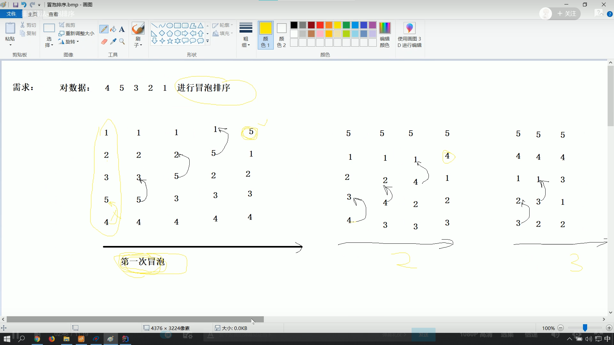
1 | import java.util.Arrays; |
时间复杂度:
**最好情况是正序的时候,时间复杂度是O(n),**最坏情况下即逆序,时间复杂度是O(n2)
空间复杂度:
由于只涉及到数据交换,所以空间复杂度是O(1)
插入排序:
插入排序，一般也被称为直接插入排序。对于少量元素的排序，它是一个有效的算法 [1] 。插入排序是一种最简单的排序方法，它的基本思想是将一个记录插入到已经排好序的有序表中，从而一个新的、记录数增1的有序表。在其实现过程使用双层循环，外层循环对除了第一个元素之外的所有元素，内层循环对当前元素前面有序表进行待插入位置查找，并进行移动 [2] 。
总结:将数据分成两组,以此遍历后面的数据,与前面的一组比较,选择合适的位置插入
如下代码通过交换位置插入
1 | package 排序; |
时间复杂度:
在插入排序中，当待排序数组是有序时，是最优的情况，只需当前数跟前一个数比较一下就可以了，这时一共需要比较N- 1次，时间复杂度为

最坏的情况是待排序数组是逆序的，此时需要比较次数最多，总次数记为：1+2+3+…+N-1，所以，插入排序最坏情况下的时间复杂度为

平均来说，A[1..j-1]中的一半元素小于A[j]，一半元素大于A[j]。插入排序在平均情况运行时间与最坏情况运行时间一样，是输入规模的二次函数 [1] 。
空间复杂度:
插入排序的空间复杂度为常数阶

稳定性:
如果待排序的序列中存在两个或两个以上具有相同关键词的数据，排序后这些数据的相对次序保持不变，即它们的位置保持不变，通俗地讲，就是两个相同的数的相对顺序不会发生改变，则该算法是稳定的；如果排序后，数据的相对次序发生了变化，则该算法是不稳定的。关键词相同的数据元素将保持原有位置不变，所以该算法是稳定的 [5] 。
选择排序:
选择排序即每次都选出后续元素的最小值,以此排放,即第一次选出最小的放在最前面,第二次选出第二小的放在第二位,以此类推
注:原来的第一位将与最小值的位置交换位置避免丢失数据
1 | package 排序; |
时间复杂度:
选择排序的交换操作介于 0 和 (n - 1)次之间。选择排序的比较操作为 n (n - 1） / 2 次之间。选择排序的赋值操作介于 0 和 3 (n - 1） 次之间。比较次数O(n^2），比较次数与关键字的初始状态无关，总的比较次数N=(n-1）+(n-2）+…+1=n*(n-1）/2。交换次数O(n），最好情况是，已经有序，交换0次；最坏情况交换n-1次，逆序交换n/2次。交换次数比冒泡排序少多了，由于交换所需CPU时间比比较所需的CPU时间多，n值较小时，选择排序比冒泡排序快。
空间复杂度:O(1)
稳定性:
由于要交换位置,所以可能导致相同值的位置不一样,故是不稳定
归并(分治)排序
即将一个数组逐渐拆分,最后每个数组只剩下一个元素,然后两两按顺序合并成一个新数组
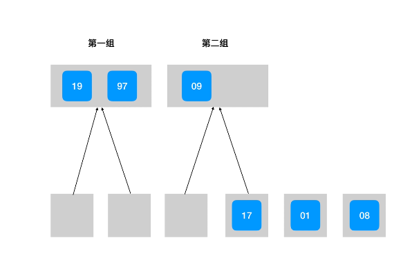
1 | package 排序; |
时间复杂度: O(n log n)
归并排序,可分为两个过程,即拆分,和合并(排序),其中拆分是不随着问题规模n变大而影响的,即为常数级,可忽略,主要是看合并过程,
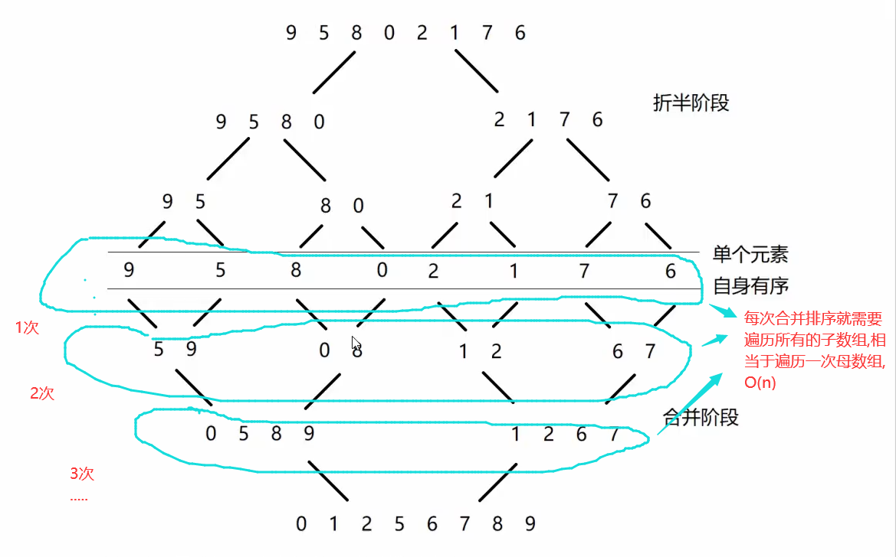
如图所示,总共需要进行 log2 n 次合并,因为对于满二叉树来说,
设二叉树的层次为 x ,则叶子数目为 2x -1 ,
则可求得满二叉树的层次为 x = log2 n +1 ,但是到最后一层已经是结果了,就不需要再遍历了
所以,**总共需要进行 log2 n 次合并 ,**而每次合并需要O(n),故时间复杂度为 O (n log n)
空间复杂度: O(n)
由于需要开辟一个与原来的数组等长的数组来临时存放,故 O(n)
稳定性:
归并排序是稳定的
快速排序(待写)
计数排序
计数排序是一个非基于比较的排序算法，该算法于1954年由 Harold H. Seward 提出。它的优势在于在对一定范围内的整数排序时，它的复杂度为Ο(n+k)（其中k是整数的范围），快于任何比较排序算法。 [1] 当然这是一种牺牲空间换取时间的做法，而且当O(k)>O(nlog(n))的时候其效率反而不如基于比较的排序（基于比较的排序的时间复杂度在理论上的下限是O(nlog(n)), 如归并排序，堆排序）
即将序列分到若干个桶里,其中设桶的编号为序列的最大值,桶中的值代表该数据在原始序列中出现了多少次,例如编号为5的桶,值为3,即使原序列中有值为5的值,且有5个, 比如 2,5,3,5,6,7,5
1 | package 排序; |
时间复杂度:
O(n+k) 其中k是整数的范围(如序列的最大值是1000,则k为1000)
空间复杂度:
O(n+k)
稳定性
计数排序是稳定的
桶排序(待写)
二分查找
二分查找又叫做折半查找
如下代码分别使用了递归和循环来实现二分查找
1 | package 查找; |
需求1:查找第一个重复值
如果查找的值有重复值,则查找到第一个重复值的下标
自己也可实现一下查找最后一个重复值
1 | package 查找; |
需求2:相近值
查找序列中的值大于等于查找值的下标
可自己实现查找系列中小于等于查找值的下标
1 | package 查找; |
散列表(了解即可)
散列表（Hash table，也叫哈希表），是根据关键码值(Key value)而直接进行访问的数据结构。也就是说，它通过把关键码值映射到表中一个位置来访问记录，以加快查找的速度。这个映射函数叫做散列函数，存放记录的数组叫做散列表。
给定表M，存在函数f(key)，对任意给定的关键字值key，代入函数后若能得到包含该关键字的记录在表中的地址，则称表M为哈希(Hash）表，函数f(key)为哈希(Hash) 函数。
散列冲突及解决方案
散列表应用
哈希算法介绍
6.树(重点)
树型结构是一类非常重要的非线性数据结构，其中以树和二叉树最为常用。在介绍二叉树之前，我们先简单了解一下树的相关内容
树的相关概念
**结点的高度:结点到叶子结点的最长路径(边数),所有叶子结点的高度为0 ** (从下往上)
结点的深度:根结点到这个结点所经历的边的个数,所以根的深度为0 (从上往下)
结点的层数:结点的深度+1 (因为没有0层的说法,所以根是一层)
度:结点的分支数(如叶子结点的度数为0)
森林:是指m(m>=0)颗互不相交的树的集合
树的性质
==（1）总结点数=总度数和（分支数）+1=n0+n1+n2+~~总度数和+1：==
解释:除根节点外，每个结点都是一个分支，分支数=总度数和(每个结点的度数的和)，所以总结点个数=总度数和（分支数）+1
n0+n1+n2+~~:n0为叶子结点个数，各级结点个数之和=总结点个数
树的存储结构(待补充)
双亲表示法:
孩子表示法
孩子兄弟表示法
二叉树
定义:最多只有两个子结点的树叫做二叉树,左子树右子树是有顺序的,不能颠倒,即使只有一颗子树,也区分左右子树
(二叉查找)
二叉树的五种基本形态
- 空二叉树
- 只有一个根结点的二叉树
- 根结点只有左子树
- 根结点只有右子树
- 根结点既有左子树又有右子树
特殊的二叉树
满二叉树
即所有分结点都有左子树和右子树
完全二叉树
对二叉树的每个结点按顺序进行编号,与满二叉树进行对比,没有编号空档的树就完全二叉树,同理可以,满二叉树一定是完全二叉树,但完全二叉树不一定是满二叉树
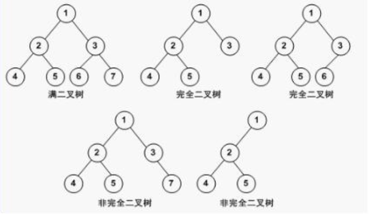
斜树
只有左子树或者右子树的二叉树
二叉树的性质
性质一:在二叉树的第i层==至多有2^(i-1)个结点==(i>=1)
解释:第一层1个,第二层2个,第三层4个 …….
性质二:深度为k的二叉树==至多有2^k - 1 个结点==
解释:
只有有一层,一个结点
有两层,1+2 = 3 = 2^2 - 1个
有三层,1+2+4 = 2^3 - 1 = 7个结点
有四层, 1+2+4+8 = 2^4 - 1 = 15 个结点
…….
性质三:n0 = n2 + 1 (即叶子结点数 = 度为二的结点数 + 1 )
解释:
根据树的性质: 树结点总数n = 总分支数 + 1
总分支数 = ==n1*1 + n2* 2== (其中n1,n2分别为度为1的结点数和度为2的结点数 )
此外 ==n = n0 + n1 + n2== ,
联立等式: n0 + n1 + n2 = 0*n0 + 1* n1 + 2* n2 , ==得 n0 = n2 + 1==
7.图Graph(重点)
图的定义:
图是由顶点(Vertex)和边(Edge)构成的,记为 G = (V,E),
根据图的边是否有方向区分有向图和无向图,
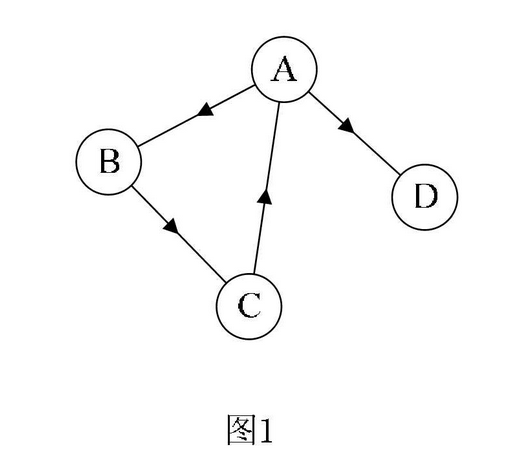
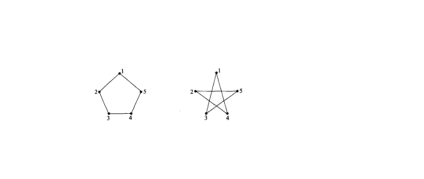
图的相关概念:
顶点的出度和入度
顶点所关联的边的个数称为该顶点的度,此外,有向图的度又分为出度和入度
邻接点和端点:
若一条边链接了A,B两个顶点,则称A,B互为邻接点,此外,有向图还有起始端点和终止端点,出边邻接点和入边邻接点
完全图:
任意顶点之间存在一条边(有向图为两条)的图称为完全图,有 n(n-1)/2条边
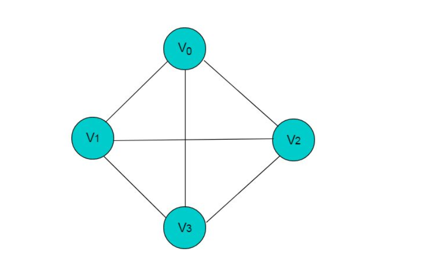
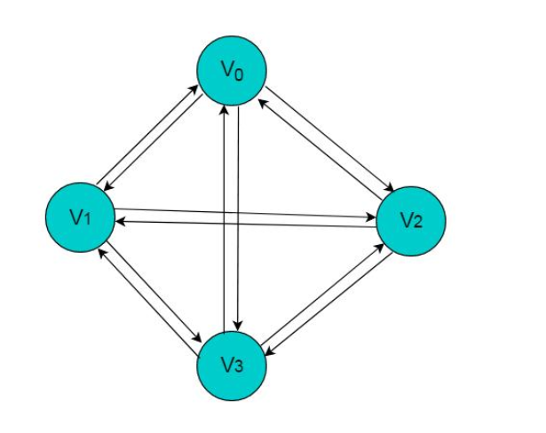
带权图
稠密图和稀疏图
子图
路径和路劲长度
路径长度是指**:经过边的数目**
回路和环
连通图,连通分量
关结点和重连通图
图的存储结构:
邻接矩阵存储方法
非带权图:
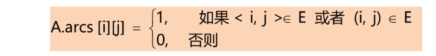
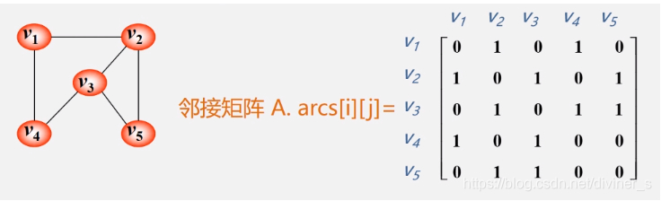
分析1：无向图的邻接矩阵是对称的；
分析2：顶点i的度=第i行（列）中1的个数；
特别：完全图的邻接矩阵中，对角元素为0，其余1。
带权图:
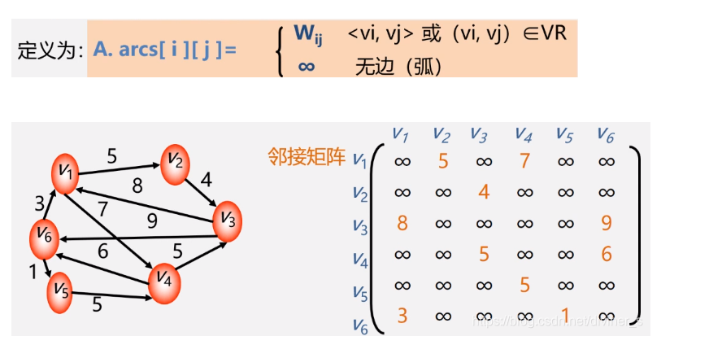